Outreach We've Done
Fourth of July event at Buck Thomas Park
We went to the Moore Fourth of July celebration at Buck Thomas Park and showed off our robot at the Girl Scout Booth. Approximately 10,000 people were there. Great experience and lots of fun showing off the robot and talking about FIRST®
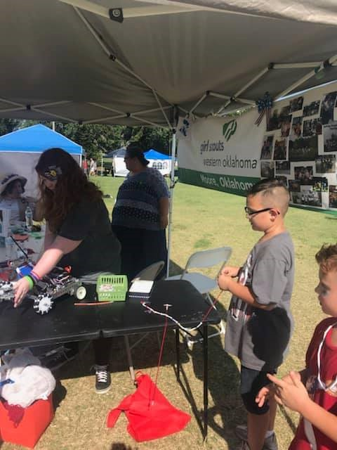 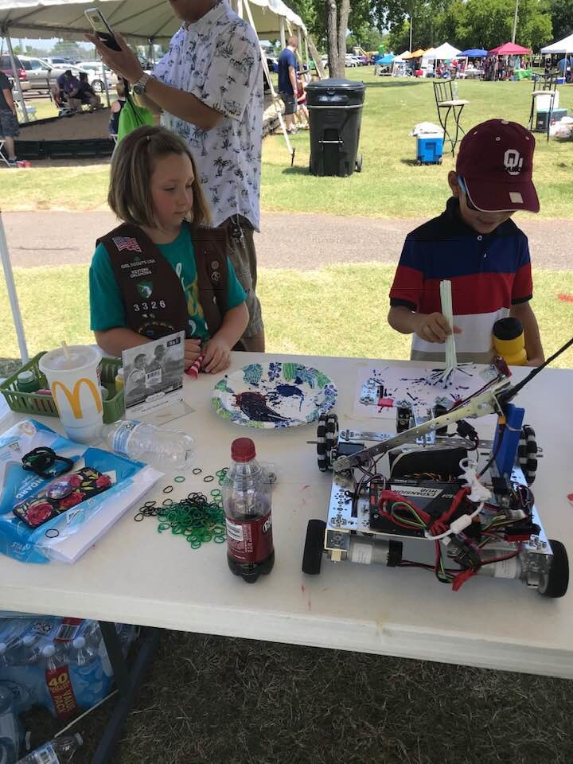 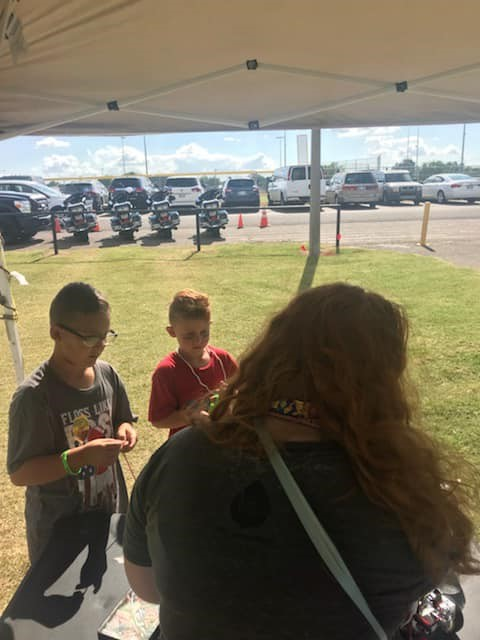Having a Trunk at Trunk or Treat Oct 27
Decorated the Trunk (Hatch) of van with robot painted on sheet, cardboard robots made with boxes, cans, bottles, bottle caps, pipe cleaners and spray paint. We handed out candy and fliers about ourselves and FIRST® and what we do along with ways to contact us at Fresh Start Church’s trunk or treat. We were asked may questions and the kids found the robot amazing. We even found on kid who was dressed up as a robot. Approximately 500 people reached
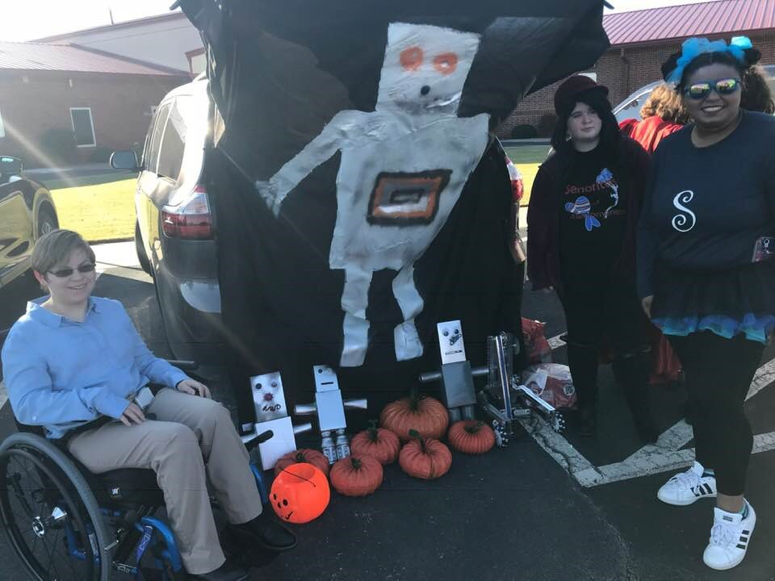 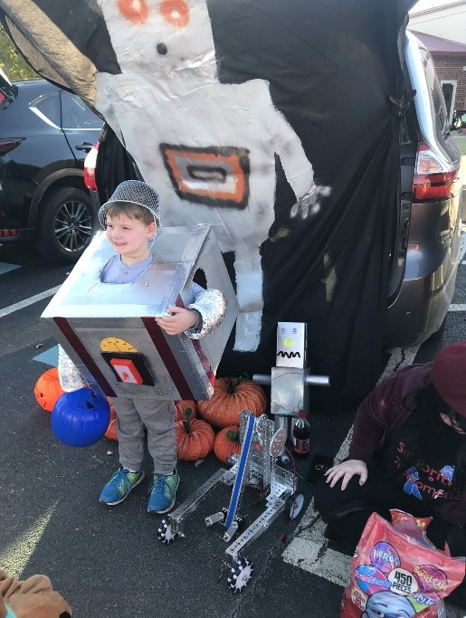 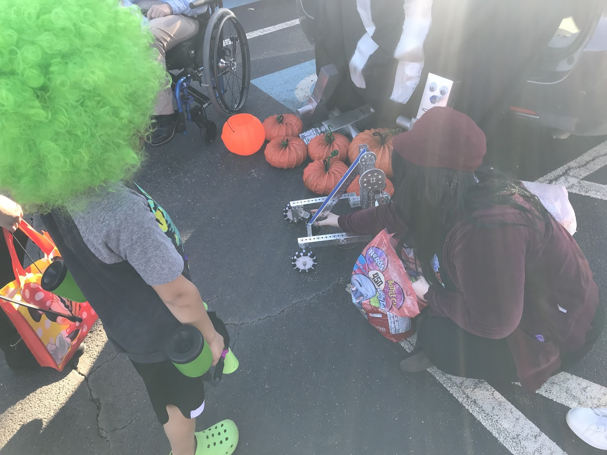Fundraising/Craft sales/Bake Sales
As we fundraised in various ways we showed our robot off by having it on the table and handing out brochures about us and FIRST®. Here are some of the things we made for the craft sale including hair clips, candle holders and pumpkins! Approximately 20 people reached
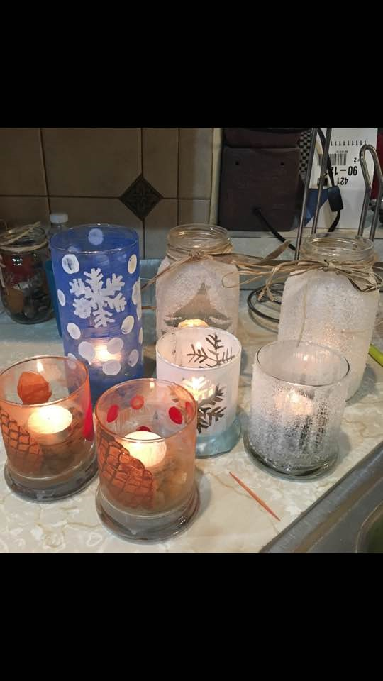 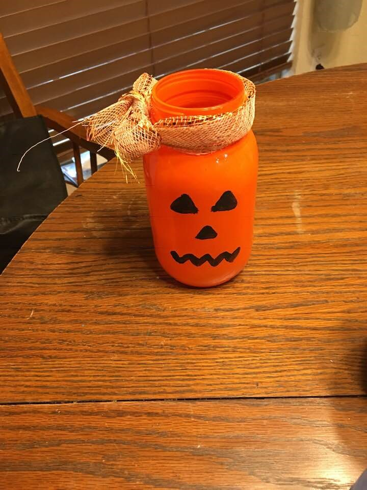 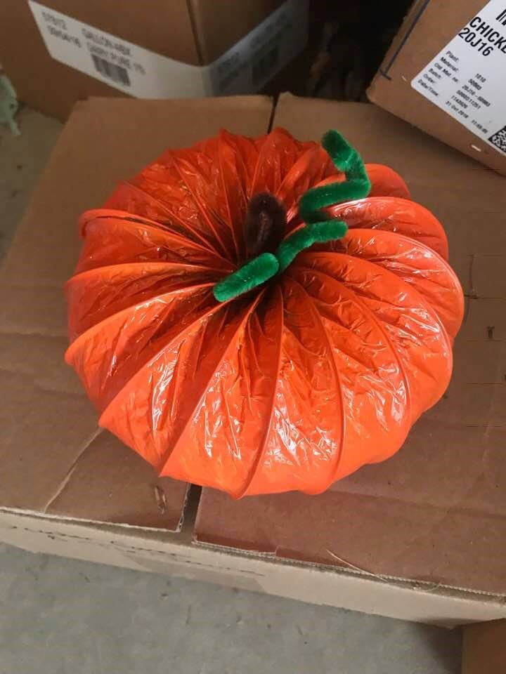Checking in on the Moore High School Team (#11348 The Pride)
We helped out the Moore High Team with suggestions and ideas. 3 of us go to Moore High School so we go by and check in after school during their meetings. Gave suggestions on motors and hub
> 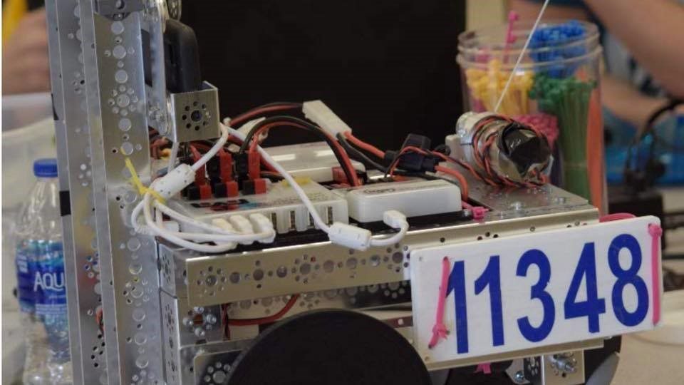Obtaining the Sponsorships
We went door to door at local businesses (50 businesses) and asked for sponsorships while handing out brochures about us. We handed out the following flier asking to sponsor us and a nice looking sheet with marked out benefits for sponsoring us Soon we will be revisiting Omni Construction and giving them a thank you card and updating Omni on how our season went.
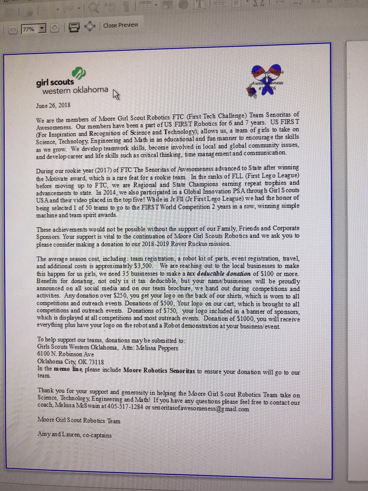Donating Girl Scout Cookies to the food pantry.
We sold leftover Girl Scout Cookies as a fundraiser and what was left over we donated to the local food bank to help those in need.
Booth at chess tournament January 19th
Saturday, january 19th, at Moore High School, a chess tournament will be held where we plan to set up a booth with information of FIRST®, Robotics, Girl Scouts and overall what we do.
Troop 3001
Troop 3001 is a girl scout group consisting of 2nd grade-8th grade. We will assist in earning their STEM badges. The junior group (4th-5th grade) wants to start an FLL team and want us to mentor them. They were amazed when we first showed them our little off season robot. We are SUPER excited to mentor them and have another girl scout FLL team like we once were. Approximately 30 people reached
2019-2020 back to school night
At the 2019-2020 back to school night we plan to have another booth telling about FIRST® and showing off our robot and what we do with the hope of gaining interest from the community. Approximately 500 people expected to be reached
© 2019 Lauren R. Smith